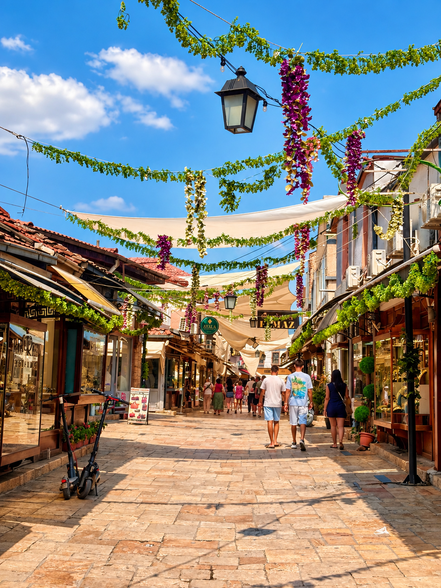
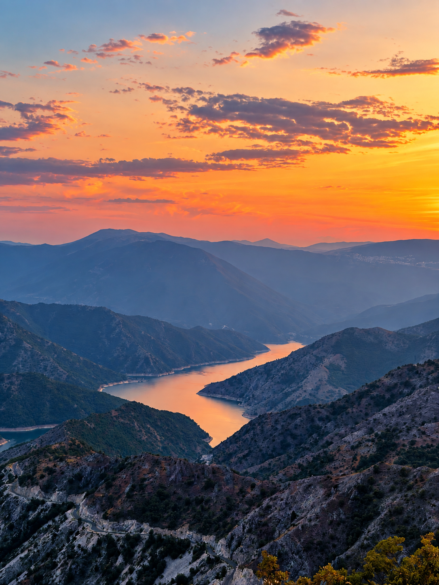
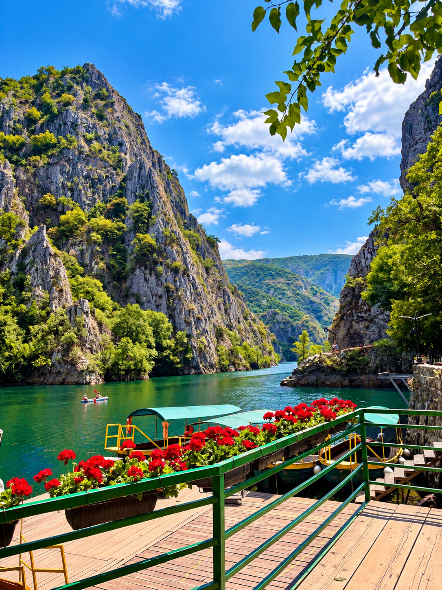
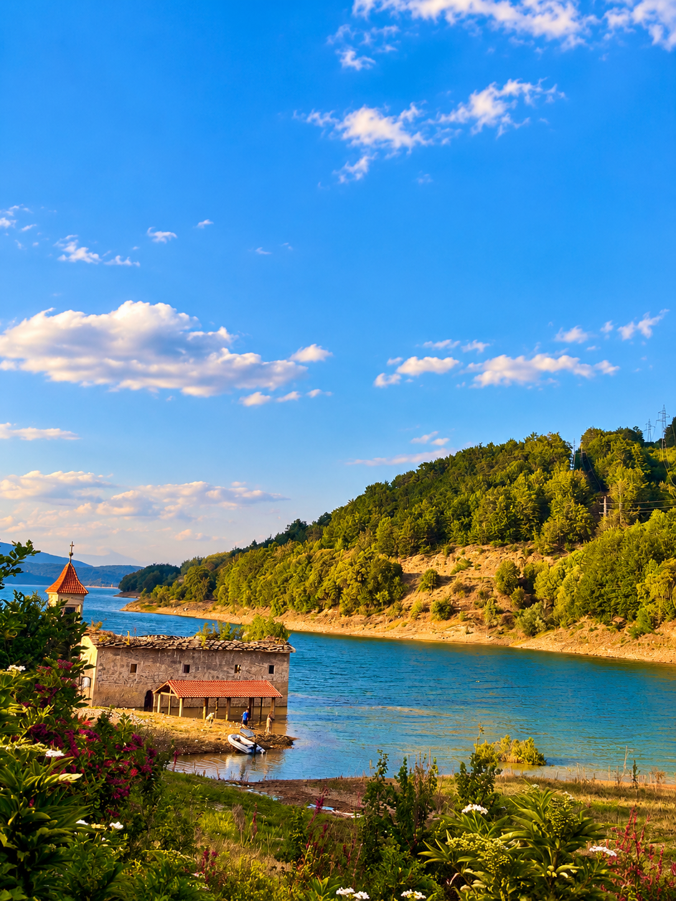
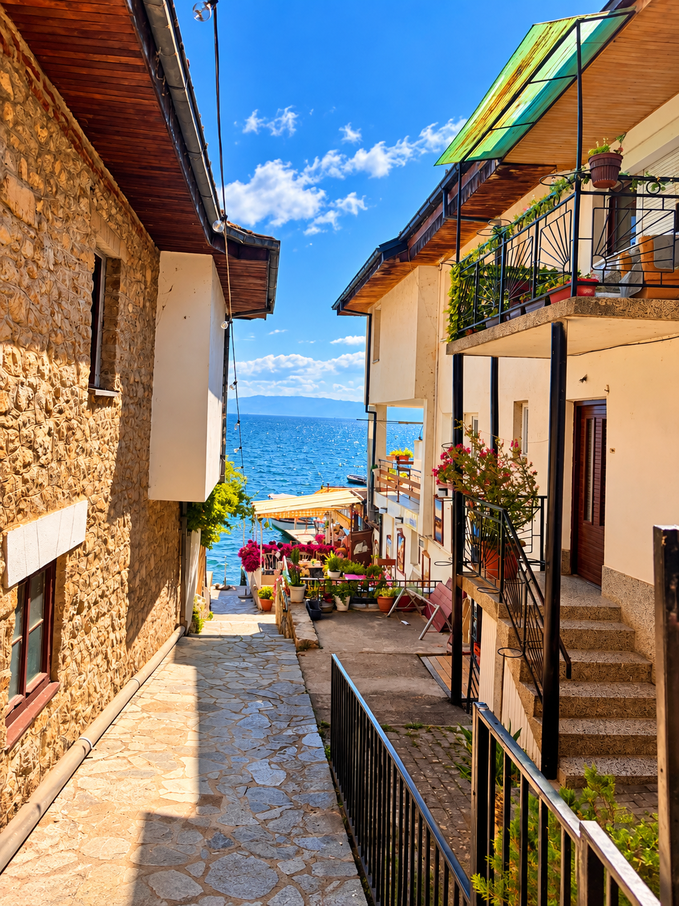
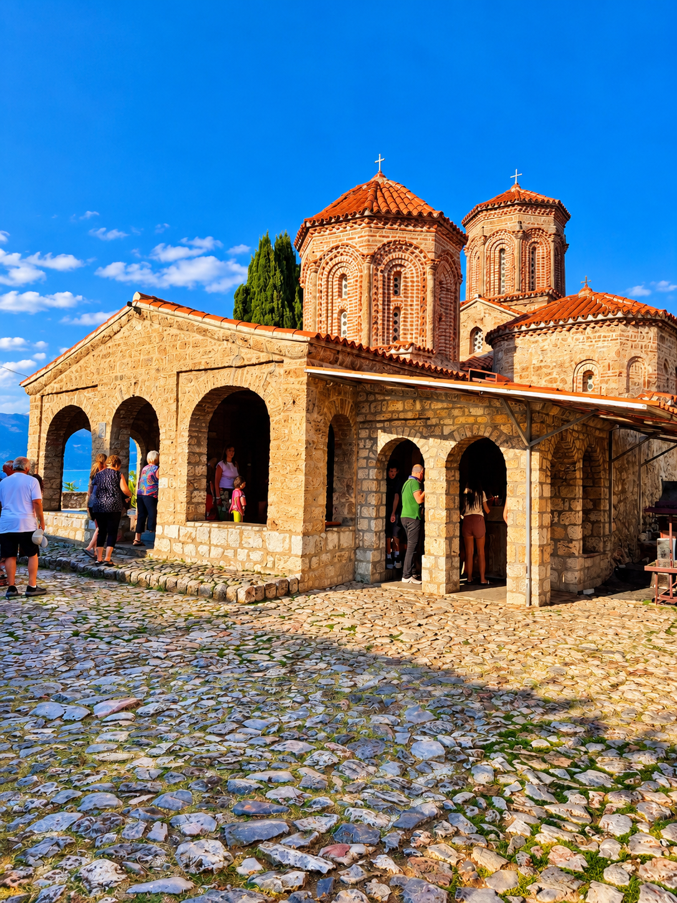
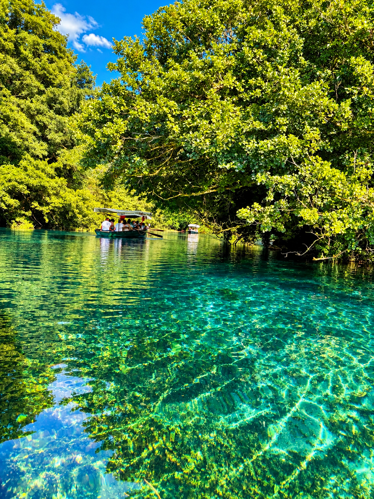

Cinque giorni tra Skopje, canyon, laghi e strade che vale la pena percorrere senza troppa fretta.
Questo è il percorso che abbiamo seguito davvero: le tappe che rifarei, quelle che abbiamo cambiato durante il viaggio e le piccole cose che avrei voluto sapere prima di partire. Non vuole essere una lista infinita di cose da vedere, ma un punto di partenza per capire come può essere un viaggio in Macedonia del Nord.
Cerca tour e attività tra Skopje e il Lago di Ohrid.
Pubblicità · Link affiliati GetYourGuide: potrei ricevere una commissione sulle prenotazioni.
Il viaggio comincia da Skopje. Il primo giorno lo abbiamo dedicato alla città, lasciandoci soprattutto il tempo di girare nell'Old Bazaar senza un programma troppo rigido.
Proprio qui abbiamo trovato per caso Bratstvo, dove ci siamo fermati a mangiare.

Nel pomeriggio abbiamo lasciato Skopje per raggiungere il Lago Kozjak.
Siamo arrivati verso sera e il tramonto ha trasformato una semplice deviazione in uno dei momenti più belli del viaggio.
Per cena ci siamo poi fermati al Riverside Garden Restaurant, lungo il fiume.

Se dovessi scegliere una tappa da non eliminare dall'itinerario, sarebbe Matka Canyon.
Ci siamo arrivati in mattinata e abbiamo dedicato la prima parte della giornata al canyon, prima di proseguire verso la zona di Mavrovo.

Dopo Matka abbiamo pranzato al Dardani Restaurant e siamo ripartiti verso Mavrovo.
Qui siamo andati a vedere la famosa chiesa sul lago, conosciuta per apparire parzialmente sommersa quando il livello dell'acqua è più alto.
Nel programma iniziale avevamo inserito anche il monastero di Bigorski, ma alla fine non lo abbiamo visitato.

Ohrid merita una giornata vissuta con calma: centro storico, vicoli che scendono verso il lago, chiese e qualche ora semplicemente sull'acqua.
È uno di quei posti in cui avere meno tappe programmate può rendere la giornata molto più bella.

Per gli spostamenti che ci servivano abbiamo prenotato tutto direttamente tramite l'app Uber.
Il giorno successivo siamo partiti in direzione di San Naum.
Qui il viaggio cambia ancora atmosfera: monastero, lago e soprattutto le sorgenti, con un'acqua talmente limpida da sembrare irreale.


Alle sorgenti abbiamo mangiato al Restaurant Ostrovo, che per noi è stata un'altra ottima scoperta.
Questa zona del lago ci è piaciuta addirittura più di quella di Ohrid.
L'ultimo giorno non abbiamo cercato di riempire per forza l'itinerario.
Abbiamo lasciato il B&B, fatto colazione in un panificio trovato per caso a Ohrid e mangiato un burek macedone che, fino ad ora, rimane il più buono che abbia provato nell'Est Europa.
Poi strada verso Skopje, con una semplice pausa pranzo lungo il percorso prima di rientrare.
Abbiamo trovato facilmente ATM, ma per le carte fisiche il prelievo era disponibile in multipli di 500 denari macedoni: 500, 1000, 1500, 2000, 2500 e così via.
Per il nostro viaggio siamo riusciti a trovare un'opzione di noleggio auto senza caparra. Per noi è stato uno dei dettagli che ha reso il road trip molto più semplice.
Quando ci è servito un passaggio abbiamo prenotato tramite l'app Uber. A Ohrid abbiamo utilizzato anche un taxi boat per raggiungere una spiaggia più distante.
Se vuoi una giornata sul lago, non aspettare il pomeriggio per cercare un posto nelle zone più conosciute del lungolago.
È un itinerario che funziona meglio lasciando un po' di margine. Tra strade, soste e traffico, aggiungere una tappa in più non significa necessariamente vedere meglio il Paese.
Questo è ciò che abbiamo fatto davvero, non un itinerario costruito a tavolino. Alcune tappe inizialmente previste sono state cambiate o eliminate durante il viaggio.
Cinque giorni possono essere organizzati in molti modi diversi. Budget, periodo, ritmo del viaggio, interessi e tipo di spostamenti cambiano completamente l'itinerario. Se vuoi, possiamo costruirne uno partendo da come viaggi tu.
Costruiamo il tuo viaggio →